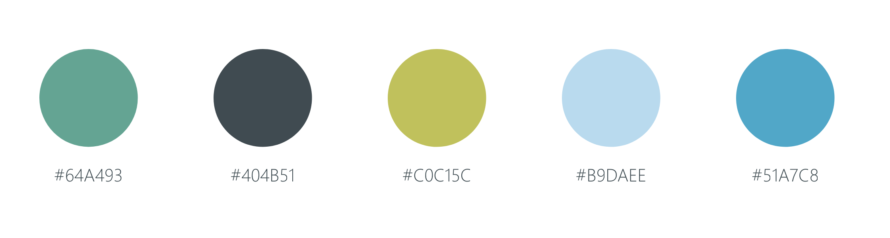

Design
We used yellows and blues to achieve feasibility within a patriotic envirnment. We did not want to overtly use red, white and blue. We found that yellow paired well with the brighter blues and sustained a professional stance. Our primary audience is above the age of 35 years, hence big fonts and icons designed to increase accessibilty and decrease the rate of errors.
